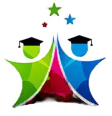
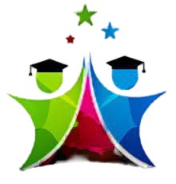

Welcome to PEC
Pondicherry Engineering College was established in the year 1984 ubder the seventh Five Year Plan with liberal seed grant from MHRD,
Governmnet of India. The institution is fully funded by the Government of Puducherry. It is autonomous for both administrative and academic purposes. The
sprawling 210 acres beautiful campus of the institute equipped with the best of breed infrastructure provides an excellent environment to the students and
scholars towards pursuing thier academic education and research. The institute offers eight undergraduate, eleven post graduate and Ph.D programmes in
the major disciplines of engineering and technology. Every year college admits 450 students in UG programmes; 173 in PG programmes; 30 in MCA
programmes and 10 in M>Sc and M.Phil. Materail Science programmes. Currently, around 400 scholars are pursuing Ph.D in various disciplines in the
campus.